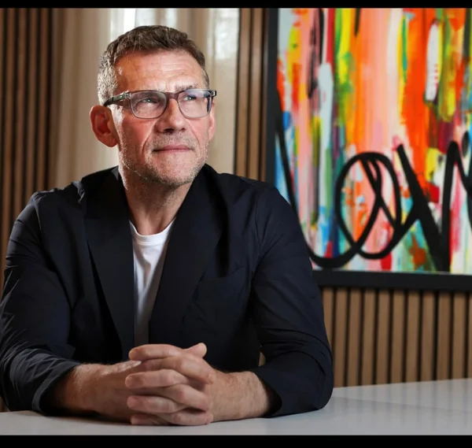

Nick Munier
I paint to heal and express the inner feelings that are often hard to articulate.
Open for commissions
Nick Munier welcomes enquiries about new, commissioned work.


About Nick
NICK MUNIER Nick Munier | Contemporary Artist Nick Munier is a contemporary artist whose creative journey has taken him from the high-pressure world of professional kitchens and television to the freedom and experimentation of abstract art.
Best known for his appearances on MasterChef Ireland and Hell’s Kitchen, Nick enjoyed a successful career in hospitality, working alongside some of the most influential figures in the culinary world, including legendary chef Marco Pierre White.
In November 2026, Nick featured in the BBC Two documentary The Rise of the Rockstar Chef, exploring the extraordinary career and influence of Marco Pierre White.
Today, Nick channels his creativity into painting, producing bold, expressive works that are full of colour, energy and individuality. Working primarily with acrylics, oil sticks, collage and décollage, he combines different materials and techniques to create richly layered compositions that often blur the boundaries between abstraction and contemporary pop art.
Drawing inspiration from music, fashion, people and everyday life, Nick approaches each painting with a sense of spontaneity and experimentation. His work is instinctive and unapologetically expressive, often incorporating unexpected shapes, textures and contrasts.
There is a distinctive confidence and playfulness to Nick’s paintings, reflecting a creative personality that has never been particularly interested in following convention.
His transition from the culinary world to contemporary art is a natural evolution of a career driven by imagination, individuality and a willingness to push creative boundaries.
Interested in Nick Munier's work?
Send an enquiry through PlotArt and we'll put you in touch with the artist.
Enquire through PlotArt